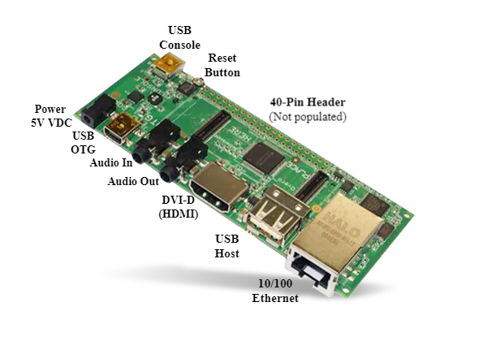

Primeiros passos com o Gumstix Overo¶
Montando o Gumstix COM na Placa de Expansão Tobi¶
A configuração dos computadores Gumstix Overo consiste em um computador em modulo e uma placa de expansão. O modulo Overo se conecta a uma placa de expansão Tobi através dos dois conectores AVX de 70 pinos localizados na parte inferior do COM. Coloque a placa Tobi em uma superfície plana, antiestética, alinhe a COM com o contorno branco na placa acima dos conectores e pressione delicadamente a COM até que ela se encaixe no lugar.

Para utilizar a câmera, a placa de câmera deve ser conectada à parte superior do Overo COM através de um cabo de fita.
Conexões do computador¶

A placa de expansão Tobi vem com portas USB Host e portas USB On-the-Go (OTG). A porta USB Host é usada exclusivamente para conectar periféricos ao sistema, enquanto a porta USB OTG pode ser usada para conectar periféricos via cabo USB OTG ou para conectar o sistema Gumstix como periférico a um sistema host separado.
A porta USB Host utiliza uma corrente de 500 mA e aceita uma taxa de amostragem de High-speed (HS) a 480 Mbit/s, enquanto a porta USB OTG tem uma corrente de 100 mA e suporta três diferentes taxas de amostragem, Low Speed (LS) a 1,5 Mbit/s, Full Speed (FS) a 12 Mbit/s e High Speed (HS) a 480 Mbit/s.
Note
Muitos periféricos USB usam uma taxa de sinalização de Full Speed (FS) e não funcionam na porta USB Host, que é apenas de High Speed (HS). Se você estiver com problemas para conectar periféricos USB diretamente ao sistema Gumstix, conectar os periféricos primeiro a um hub USB com alimentação e depois conectar o hub com alimentação ao sistema Gumstix geralmente resolverá o problema.
Para a conexão de mais periféricos, além da quantidade de portas USB disponíveis na placa de expansão Tobi, recomendamos a utilização de um hub USB. O hub USB energizado deve ser conectado a porta USB Host da placa de expansão e um hub USB não energizado deve ser conectado a porta OTG USB da placa de expansão com um cabo USB On-the-Go.
Tip
O vídeo Connecting Gumstix Tobi Expansion Board to Video Monitor demonstra como conectar um Overo COM a um monitor e alguns periféricos através da placa Tobi.
Conectando-se ao Overo¶
Primeiramente, insira o seu cartão microSD com a imagem do sistema operacional no slot de cartão na parte superior do Overo COM. Certifique-se de que ele se encaixa firmemente no lugar.
O computador Overo pode ser acessado conectando-o a um outro computador Linux ou Windows, ou até mesmo ser ligado diretamente a um monitor DVI e conectado a diversos periféricos, como mouse, teclado, monitor, saída de som, entre outros, através da placa de expansão Tobi.
Nesse trabalho, iremos optar por liga-lo a um computador Linux e estabelecer uma conexão seria via a porta USB Console por simplicidade.
Estabelecendo uma conexão serial via console¶
Para ligar o computador embarcado ao computador conecte um cabo USB ao computador e ao USB console da placa de expansão tobi. Feito isso, uma luz verde deve se acender indicando a conexão correta. Em seguida verifique em qual porta de comunicação serial a gumstix foi conectada, no Windows isso pode ser verificado acessando o Gerenciador de Dispositivos" e em seguida "Portas(COM e LPT)", no Linux basta executar o comando:
$ dmesg | grep tty
Note
O comando dmesg é um comando que imprime as mensagens núcleo que, na maioria das vezes, são mensagens dos drivers do dispositivo. Quando acrescentamos grep tty estamos realizando uma busca nas saídas da função dmesg pelo termo tty e restringindo a sua saída aquelas mensagens que contém este termo.
A placa Gumstix deve ser a última entrada a aparecer. Por exemplo:
user@Ubuntu:~$ dmesg | grep tty
[ 0.000000] printk: console [tty0] enabled
[ 4214.120990] usb 2-1: FTDI USB Serial Device converter now attached to **ttyUSB0**
Em seguida será necessário executar um programa para emular o terminal, recomenda-se o programa screen, caso ainda não o tenha instalado basta executar a linha de comando sudo apt-get install screen, ou no caso de utilizar o sistema operacional Windows recomenda-se o PuTTY. Estes programas que emulam terminais e executam apenas a tarefa de imprimir os caracteres recebidos pela porta serial, ou USB no caso, e enviar por essa mesma porta os caracteres digitados.
Para iniciar o terminal de comunicação com a Gumstix basta executar, por exemplo, a seguinte linha de comando:
$ sudo screen /dev/<Nome do dispositivo USB> 115200
No caso da linha de comando do exemplo apresentada anteriormente, o termo ttyUSB0 foi a porta encontrada ao utilizar o comando "dmesg" e "115200" é a velocidade de comunicação em baud. Nesse momento a comunicação entre a gumstix e o computador deve ser estabelecida e assim que a gumstix for ligada os caracteres devem começar a ser impressos na tela do computador.
Inicialize o sistema¶
Feita conexão com o console, o Overo COM estará pronta para ser ligado,
Para inicializar o sistema basta conectar a fonte de alimentação de 5 Volts à sua placa de expansão. Os indicadores LED no COM devem acender em azul e verde. O processo de inicialização será exibido no terminal da sua máquina host. Porém, antes de ligá-la, é importante comentar que o fabricante recomenda a limpeza de variáveis da memória flash sempre que iniciar uma nova versão do sistema operacional no computador embarcado pela primeira vez. Para fazê-lo basta interromper o processo de boot antes de seu início no momento em que aparece uma contagem regressiva na tela. Uma vez interrompido o boot do sistema basta executar o comando nand erase 240000 20000 para limpar as variáveis salvas e reset para reiniciar o processo de boot, como mostrado a seguir:
nand erase 240000 20000
reset
Note
Se os LEDs azul e verde no COM não acenderem e não for exibido nada no seu terminal, tente pressionar o botão de reset na placa de expansão até ver um processo de inicialização. Se o problema persistir, a imagem pode não ter sido instalada com sucesso. Recomenda-se que você tente instalar novamente ou usar uma imagem diferente.
A figura a seguir ilustra este procedimento. Os caracteres são impressos rapidamente e a contagem de tempo é de apenas 1 segundo para os núcleos do projeto Yocto, portanto é necessário ficar atento para interromper o processo.
Feito isso o processo de boot deve iniciar e diversas mensagens irão aparecer na tela. É importante verificar, na primeira vez que se inicia o sistema operacional, se nenhuma mensagem de erro aparece e, se tudo ocorrer bem, ao final do processo será exigido uma senha, se o computador embarcado chegou a esse ponto provavelmente tudo está em ordem. A senha de acesso ao sistema Yocto é root e para o sistema Ubuntu gumstix, caso necessário a senha é igual ao usuário.
Salvando a imagem do SO na memória flash¶
Referências¶
PITA, H. C. Desenvolvimento de sistema de comunicação multiplataforma para veículos aéreos de asa fixa. Faculdade de Tecnologia, Universidade de Brasília, 2018.
4. Boot Your System - gumstix.com
Write Images to Flash - gumstix.com